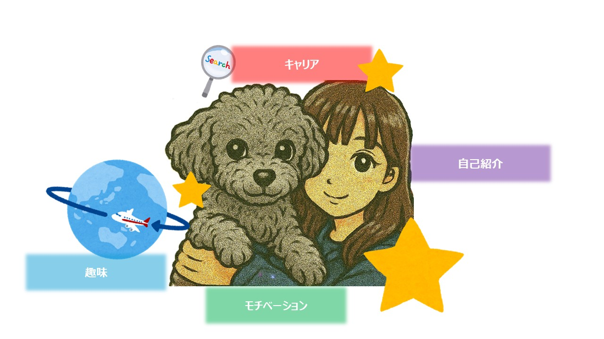

1. Bootstrapアイコン
Bootstrap Iconsは沢山ある。https://icons.getbootstrap.jp/を参照してください。
2. タイポグラフィ
タイポグラフィとは、見出し<H1など>、本文、リストなどを言う
2.1. small
少し小さいフォントは<small>を使う
少し小さいフォントは、class="small"を使っても良い
2.2. strong & b
strong要素を使って重要テキストを太字で表示させることができます
b要素でも同じことが出来ます。
2.3. mark
mark要素を使って、テキストをハイライト表示させることができます。
定義済みクラス「.mark」を使用してmark要素とスタイルを一致させることもできます。
2.4. del & s
del要素のデフォルトスタイルを使って、テキストを削除されたテキストとして取り消し線を表示させることができます。
s要素のデフォルトスタイルを使って、テキストを削除されたテキストとして取り消し線を表示させることができます。
2.5. ins & u
ins要素のデフォルトスタイルを使って、テキストを後から挿入されたテキストとして下線を表示することができます。
u要素のデフォルトスタイルを使って、テキストをラベル付けされたテキストとして下線を表示させることができます。
2.6. em
em要素のデフォルトスタイルを使って、テキストを強調したいテキスト（Emphasis text）としてイタリック体または斜体で表示させることができます。（ブラウザによっては123やabcなど英数字のみ適用）
2.7. 略語
addr要素を使って、略語の説明を出せる
HTML
HTML
2.8. 引用文
参考文献からの引用
「学び続ける者だけが、真の成長を遂げる。」
2.9. リスト
class="ms-3"をつけるとマーカーを消せる
- リスト項目
- リスト項目
- ネストされたリスト項目
- ネストされたリスト項目
- ネストされたリスト項目
- リスト項目
- リスト項目
2.10. インラインリスト
class="list-inline"とclass="list-inline-item"をつけるとインライン（横方向）表示になる
- インラインリスト項目
- インラインリスト項目
- インラインリスト項目
3. 画像
画像をレスポンシブにする機能をBootstrapは持っている
3.1. レスポンシブ画像
class="img-fluid"をつけるとレスポンシブ画像になる（ブラウザの表示サイズに連動する）
3.2. サムネイル画像
class="img-thumbnail"をつけるとサムネイル画像になる

4. テーブル
表形式を表現するのはtable要素だが、Bootstrapで表示形式を変更できる
4.1. ストライプ
| 項目 | 内容 |
|---|---|
| 名前 | テクノ太郎 |
| 生年月日 | 1999年7月1日 |
5. モーダル
5.1. ボタンと連動したモーダル
以下のボタンを押すとモーダルが表示される。もう一度押すと消える。
6. カード
6.1. インラインでカードを表示
カードを表示し福岡市の祭りを紹介。インラインで横方向に表示している。
博多どんたく港まつり
博多どんたくは、約850年前の治承3年（1179年）に始まったとされる民俗行事「博多松囃子（まつばやし）」を起源としています。昭和37年（1962年）に市民総参加の「福岡市民の祭り」となり、国内外から200万人以上の人出でにぎわう日本有数のお祭りとなりました。
博多祇園山笠
博多の総鎮守として知られる櫛田神社（福岡市博多区）に山笠と呼ばれる作り山を奉納する神事で、国の重要無形民俗文化財に指定されていています。
7. カルーセル
7.1. カルーセルでスライド表示
カルーセル機能で福岡市の祭りを紹介。定期的にスライドする
8. コラプス
8.1. 開いたり・閉じたり
以下のボタンを押すとカードを表示する。もう一度押すと消える。
10. リストグループ
10.1 アクティブなアイテムと色
- An active item
- A second item
- A third item
- A fourth item
- And a fifth one
12. ドロップダウン
12.1. シングルボタン
ボタンをクリックするとドロップリストが表示される。
13. オフキャンパス
13.1. ボタンイベントのオフキャンパス
ボタンをクリックすると、左側にオフキャンパスが表示される。
Offcanvas
実際の場面では、テキスト、画像、リストなど、あなたが選んだ要素を使うことができます。 ここではプレースホルダーとしてのテキストを表示しています。
14.ポップオーバー
14.1. ポップオーバー
ボタンを押すとポップオーバーが表示される
15. スクロールスパイ
15.1. 基本
navbarのメニューから書く項目へ飛ぶ
第1の見出し
...
第2の見出し
...
第3の見出し
...
第4の見出し
...
第5の見出し
...
16. トースト
16.1. 基本
以下のようなバルーンが出せる
初期設定では表示後5秒で消える仕様だが、今の設定は制限時間がない
これはトーストからのメッセージです。
17. Colorユーティリティ
17.1. 文字
.text-primary
.text-secondary
.text-success
.text-danger
.text-warning
.text-info
.text-light
.text-dark
.text-body
.text-muted
.text-white
.text-black-50
.text-white-50
17.2. 背景色
.text-primary
.text-secondary
.text-success
.text-danger
.text-warning
.text-info
.text-light
.text-dark
18. Bordersユーティリティ
18.1. ボーダー
18.2. ボーダーカラー
18.3. ボーダー幅
19. Displayユーティリティ
19.1. インライン
19.2. ブロック
20. Sizingユーティリティ
20.1. 幅を指定する
20.2. 高さ幅を指定する
21. Spacingユーティリティ
以下は、ｍやpのパラメータのあと、m-3などの数値を使うが、0～5まで指定できる
0:マージンなし、1:0.25rem、2:0.5rem、3:1rem、4:1.5rem、5:3rem
21.1. マージンを指定する
21.2. パディングを指定する
要素の内側から外側にマージンを取る
22. Flexユーティリティ
レイアウトをBOX単位で自由に配置できるユーティリティ
22.1. flexbox有効化
22.2. flexbox配置行方向
22.3. flexbox配置カラム方向
22.4. flexbox混合
23.Textユーティリティ
文字の整列、折り返し、太さを設定
23.1. 文字の配置
text-start
text-center
text-end
24. Positionユーティリティ
相対位置・絶対位置など、要素の位置指定を行うことが出来る